8 Plotting time series data
8.1 Creating time objects
Before visualising temporal data, we often need to create proper date or
time objects from separate columns (year, month, day, hour, etc.). The
lubridate package provides convenient functions for this.
Note: The technical R name for these objects is “datetime” (specifically
POSIXct). We use “time object” here to avoid confusion withDateobjects, since “datetime” contains “date” and the two can easily be mixed up.
8.1.1 The make_datetime() function
When your data has date/time components in separate columns, use
lubridate::make_datetime() to combine them:
library(lubridate)
library(dplyr)
# Example: storms data has separate year, month, day, hour columns
# Create a datetime column
storms_sample <- storms |>
filter(name == "Katrina", year == 2005) |>
mutate(time = make_datetime(year, month, day, hour))
head(storms_sample)## # A tibble: 6 × 14
## name year month day hour lat long status category
## <chr> <dbl> <dbl> <int> <dbl> <dbl> <dbl> <fct> <dbl>
## 1 Katri… 2005 8 23 18 23.1 -75.1 tropi… NA
## 2 Katri… 2005 8 24 0 23.4 -75.7 tropi… NA
## 3 Katri… 2005 8 24 6 23.8 -76.2 tropi… NA
## 4 Katri… 2005 8 24 12 24.5 -76.5 tropi… NA
## 5 Katri… 2005 8 24 18 25.4 -76.9 tropi… NA
## 6 Katri… 2005 8 25 0 26 -77.7 tropi… NA
## # ℹ 5 more variables: wind <int>, pressure <int>,
## # tropicalstorm_force_diameter <int>,
## # hurricane_force_diameter <int>, time <dttm>The resulting time column is a proper time object that ggplot2
understands and can plot on a continuous time axis.
8.1.2 Plotting with time objects
Once you have a time object column, you can create time series plots:
ggplot(storms_sample, aes(x = time, y = wind)) +
geom_line() +
geom_point(size = 1) +
labs(x = "Date/Time", y = "Wind Speed (knots)",
title = "Hurricane Katrina (2005)")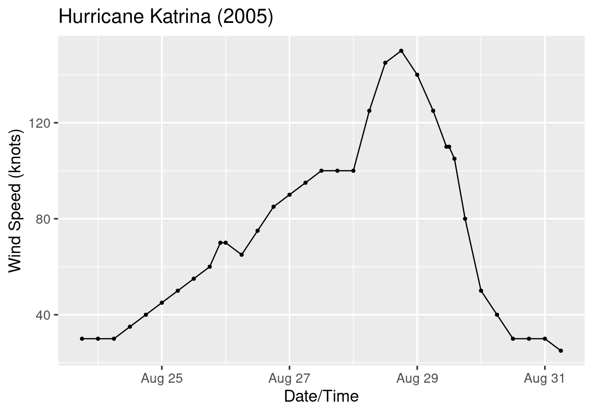
Figure 8.1: Hurricane Katrina wind speed over time.
8.1.4 Why this matters for visualisation
Having proper time objects is essential because:
- Correct spacing:
ggplot2spaces points according to actual time intervals, not row numbers - Automatic scales:
scale_x_datetime()is applied automatically with sensible breaks and labels - Proper formatting: Date labels can be customised using
strftimecodes (see Section 8.3.2)
8.2 Temporal data visualisation
Time series data requires special consideration in visualisation. The key tools
are geom_line() and geom_path(), which behave differently depending on
how your data is ordered.
We will use the economics dataset from ggplot2 throughout this section.
This dataset contains US economic time series data from 1967 to 2015:
str(economics)## spc_tbl_ [574 × 6] (S3: spec_tbl_df/tbl_df/tbl/data.frame)
## $ date : Date[1:574], format: "1967-07-01" ...
## $ pce : num [1:574] 507 510 516 512 517 ...
## $ pop : num [1:574] 198712 198911 199113 199311 199498 ...
## $ psavert : num [1:574] 12.6 12.6 11.9 12.9 12.8 11.8 11.7 12.3 11.7 12.3 ...
## $ uempmed : num [1:574] 4.5 4.7 4.6 4.9 4.7 4.8 5.1 4.5 4.1 4.6 ...
## $ unemploy: num [1:574] 2944 2945 2958 3143 3066 ...Key variables include:
date: Month of data collectionpsavert: Personal savings rate (%)uempmed: Median duration of unemployment (weeks)unemploy: Number of unemployed (thousands)
8.2.1 geom_line() vs geom_path(): the key difference
Both geom_line() and geom_path() connect points with line segments, but
they differ in how they order the points:
geom_line(): Connects points in order of the \(x\)-variablegeom_path(): Connects points in row order (the order they appear in the data frame)
8.2.2 When they produce the same result
When the data is sorted by the \(x\)-variable (which is typically the case for time series data), both geoms produce identical results:
# economics is already sorted by date
p1 <- ggplot(economics, aes(x = date, y = psavert)) +
geom_line() +
labs(x = "Year", y = "Personal Savings Rate (%)",
title = "Using geom_line()")
p2 <- ggplot(economics, aes(x = date, y = psavert)) +
geom_path() +
labs(x = "Year", y = "Personal Savings Rate (%)",
title = "Using geom_path()")
p1
p2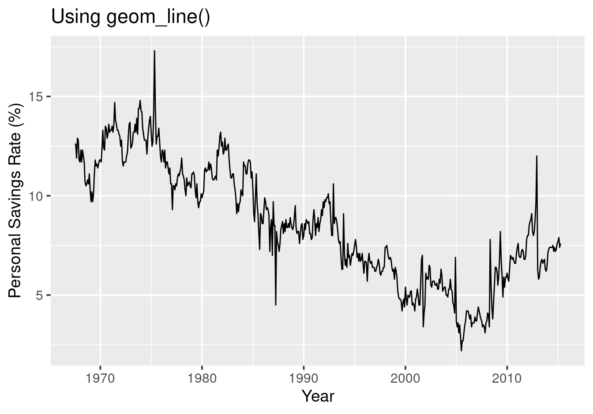
Figure 8.2: With ordered data, geom_line() and geom_path() produce identical plots.
8.2.3 When they differ: shuffled data
If we shuffle the rows, the two geoms behave very differently:
set.seed(123)
economics_shuffled <- economics |> slice_sample(n = nrow(economics))
# geom_line() sorts by x before connecting --- still works!
ggplot(economics_shuffled, aes(x = date, y = psavert)) +
geom_line() +
labs(x = "Year", y = "Personal Savings Rate (%)",
title = "geom_line() with shuffled data --- still correct!")
# geom_path() connects in row order --- chaos!
ggplot(economics_shuffled, aes(x = date, y = psavert)) +
geom_path() +
labs(x = "Year", y = "Personal Savings Rate (%)",
title = "geom_path() with shuffled data --- chaotic!")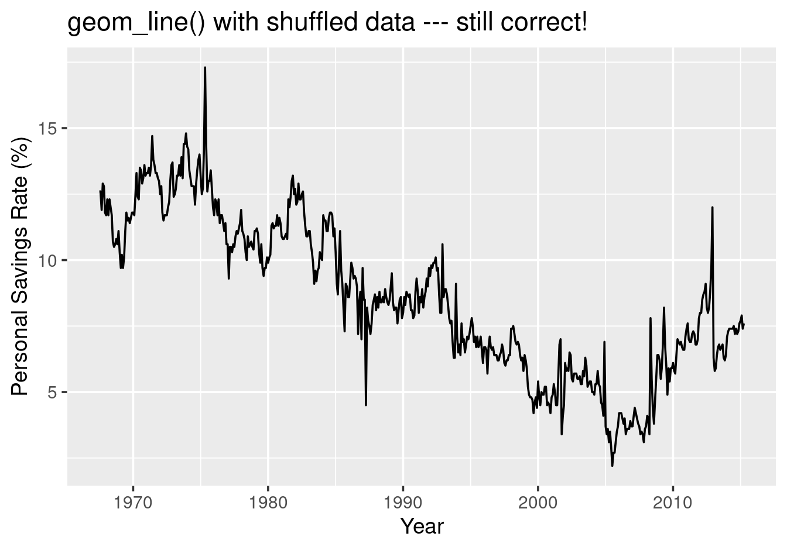
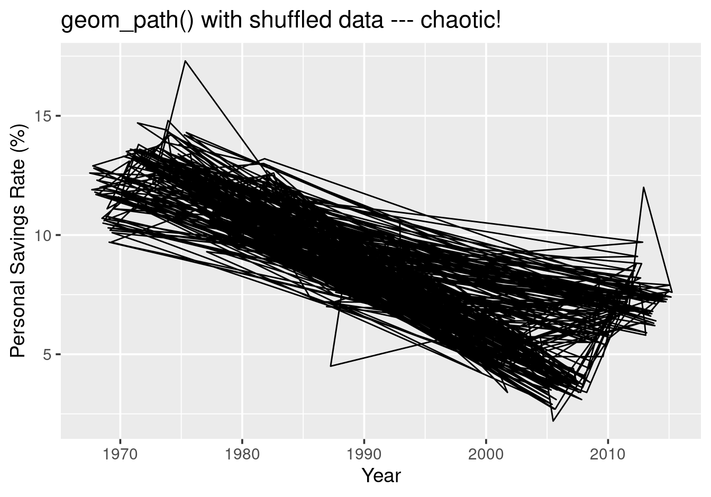
Figure 8.3: With shuffled data, geom_line() still works but geom_path() creates chaos.
Key insight: geom_line() is more robust to unsorted data because it
internally sorts by the \(x\)-variable. However, geom_path() has a unique
capability that geom_line() lacks.
8.2.4 The power of geom_path(): adding time as a third dimension
The real strength of geom_path() emerges when you want to visualise how
two variables evolve together over time. By plotting one variable against
another and connecting points in temporal order, you effectively add time as
a third dimension to a 2-D plot.
Consider the relationship between personal savings rate (psavert) and median
unemployment duration (uempmed):
ggplot(economics, aes(x = psavert, y = uempmed)) +
geom_path(alpha = 0.7) +
labs(x = "Personal Savings Rate (%)",
y = "Median Unemployment Duration (weeks)",
title = "Evolution of savings and unemployment over time")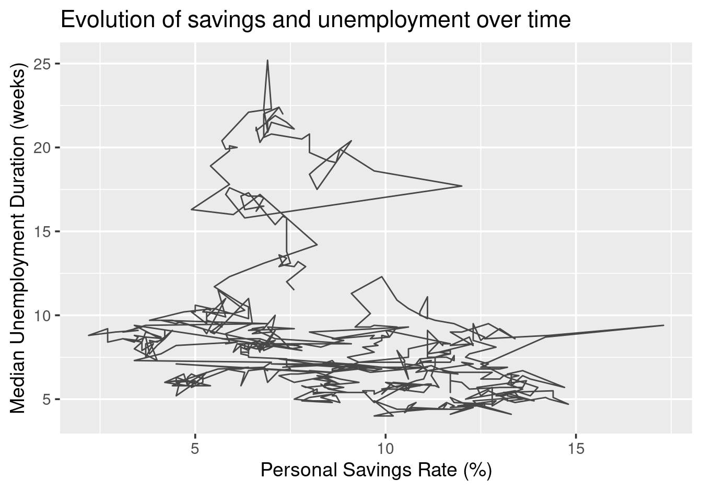
Figure 8.4: geom_path() reveals how two variables evolve together over time.
The path traces the temporal journey of the US economy through this 2-D space. You can see periods where both variables moved together, periods of divergence, and the overall trajectory from 1967 to 2015.
8.2.5 Enhancing the path with colour
To make the temporal dimension more explicit, map date to colour:
ggplot(economics, aes(x = psavert, y = uempmed, colour = date)) +
geom_path(linewidth = 1) +
scale_colour_viridis_c() +
labs(x = "Personal Savings Rate (%)",
y = "Median Unemployment Duration (weeks)",
colour = "Date",
title = "Economic trajectory from 1967 to 2015")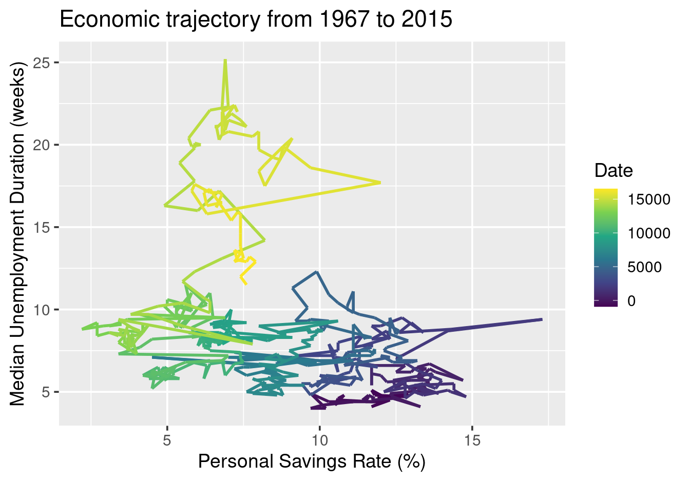
Figure 8.5: Mapping date to colour makes the temporal progression clear.
Now the colour gradient clearly shows the direction of time: darker colours represent earlier years, lighter colours represent more recent years.
8.3 Scales, labels & zooming
When you map a date or time variable to an axis, ggplot2 automatically
uses scale_x_date() or scale_x_datetime(). You can customise these scales
to control how dates are displayed.
8.3.1 Controlling date breaks
Use date_breaks to specify the interval between tick marks:
ggplot(economics, aes(x = date, y = unemploy)) +
geom_line() +
scale_x_date(date_breaks = "10 years", date_labels = "%Y") +
labs(x = "Year", y = "Unemployment (thousands)")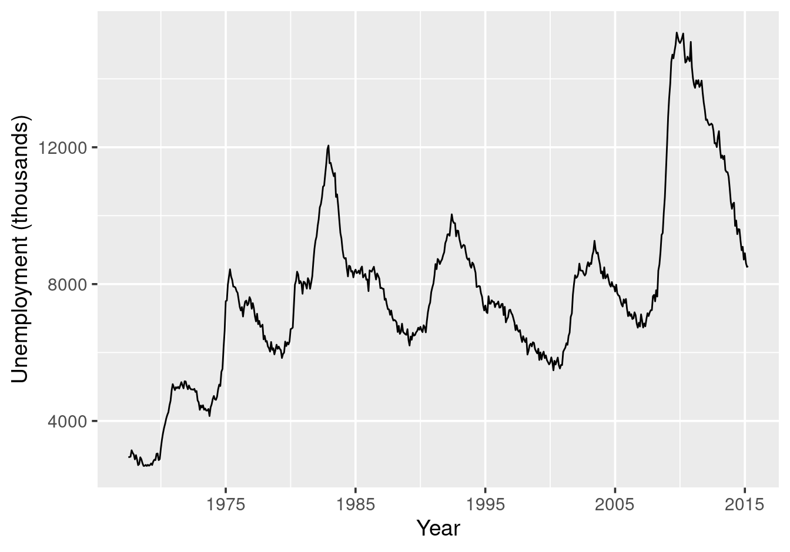
Figure 8.6: Custom date breaks every 10 years.
8.3.2 Formatting date labels
The date_labels argument uses strftime codes:
| Code | Meaning | Example |
|---|---|---|
%Y |
4-digit year | 2024 |
%y |
2-digit year | 24 |
%m |
Month as number | 01-12 |
%b |
Abbreviated month | Jan, Feb |
%B |
Full month name | January |
%d |
Day of month | 01-31 |
Note: While controlling tick marks and labels is marked as low priority in the summary table of Chapter 6, it becomes more important for temporal data where readable date formatting significantly affects interpretability.
# Filter to recent years for clarity
economics_recent <- economics |>
filter(date >= as.Date("2010-01-01"))
ggplot(economics_recent, aes(x = date, y = unemploy)) +
geom_line() +
scale_x_date(date_breaks = "1 year", date_labels = "%b %Y") +
labs(x = "Year", y = "Unemployment (thousands)")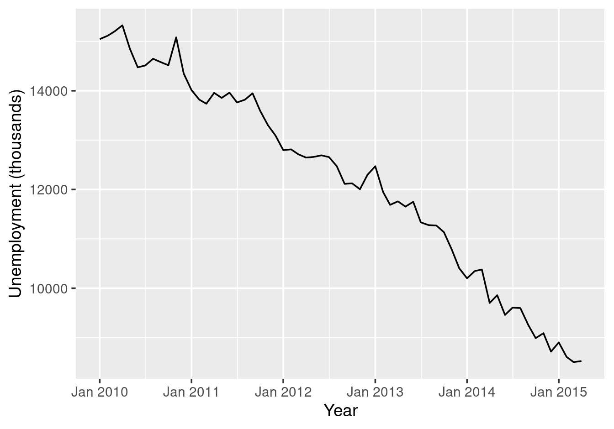
Figure 8.7: Custom date label format.
8.3.3 Labelling the time axis appropriately
Notice that in the economics dataset, the time variable is called date:
head(economics$date)## [1] "1967-07-01" "1967-08-01" "1967-09-01" "1967-10-01"
## [5] "1967-11-01" "1967-12-01"However, when we format the axis labels to show only years (using %Y), what
appears on the plot is years, not full dates. In this case, labelling the axis
as “Date” would be misleading. Instead, use labs(x = "Year") to match what is
actually displayed:
ggplot(economics, aes(x = date, y = unemploy)) +
geom_line() +
scale_x_date(date_breaks = "10 years", date_labels = "%Y") +
labs(x = "Year", y = "Unemployment (thousands)")
Figure 8.8: Label the axis to match what is displayed, not the variable name.
Alternatively, since years are self-explanatory, you can omit the label entirely
with labs(x = NULL):
ggplot(economics, aes(x = date, y = unemploy)) +
geom_line() +
scale_x_date(date_breaks = "10 years", date_labels = "%Y") +
labs(x = NULL, y = "Unemployment (thousands)")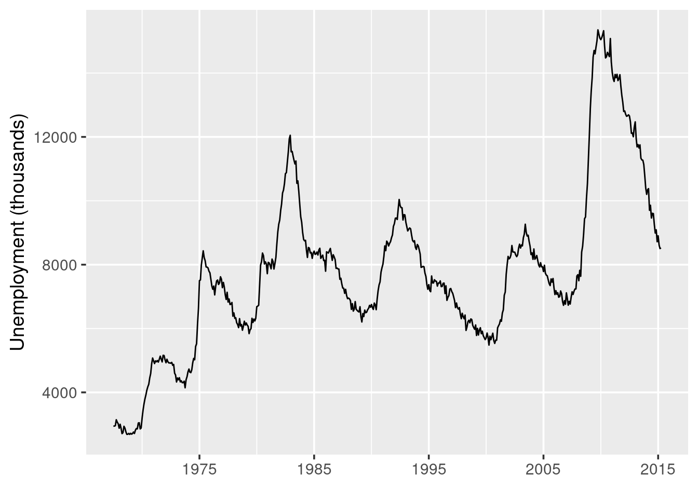
Figure 8.9: Years are often self-explanatory and need no label.
The key principle: label the axis to describe what the reader sees, not what the variable happens to be called in your data.
8.3.4 Zooming on time series
Use coord_cartesian() to zoom without removing data (important for trend
lines or smoothers):
ggplot(economics, aes(x = date, y = unemploy)) +
geom_line() +
coord_cartesian(xlim = as.Date(c("2000-01-01", "2015-01-01"))) +
labs(x = "Date", y = "Unemployment (thousands)")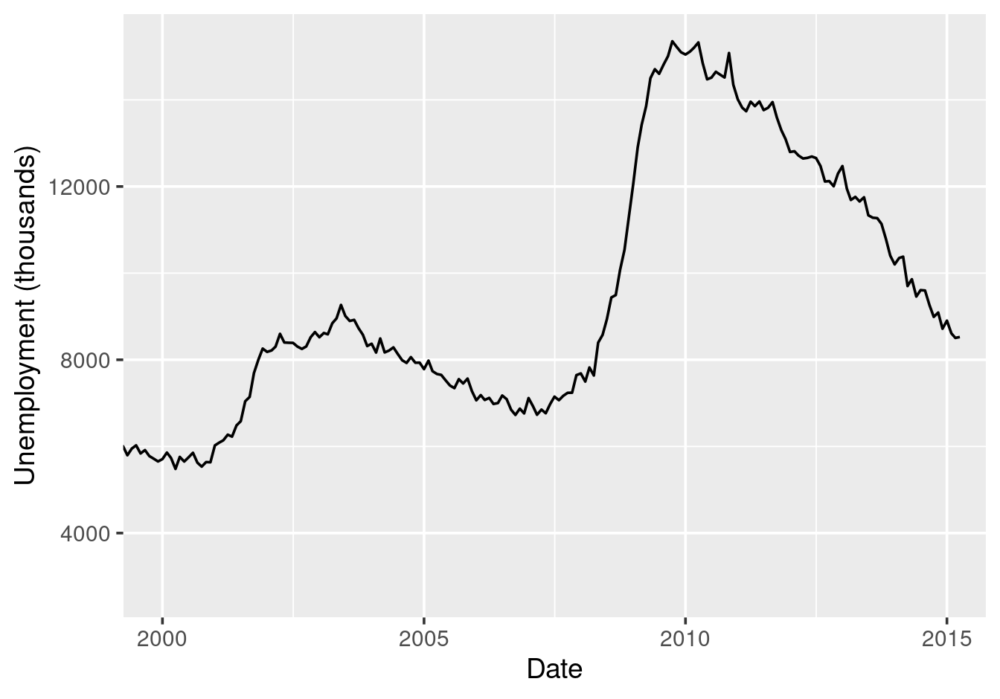
Figure 8.10: Zooming into a time period.
8.4 A potential pitfall: implicit missing data
Line plots have a subtle but important limitation: they cannot show gaps in your data if those gaps are implicit rather than explicit.
Consider a dataset that contains monthly counts — perhaps crime counts, sales figures, or website visits. If this data was produced by counting raw events, months with zero occurrences might be missing entirely rather than recorded as zero. This is called implicit missing data: the absence is hidden because the row simply doesn’t exist.
When you plot such data with geom_line(), the line will connect adjacent
observations regardless of how much time passed between them. If January and
March have data but February is missing, the line will connect January directly
to March with no indication that a month was skipped.
# Simulated monthly data with February missing
monthly_data <- data.frame(
date = as.Date(c("2024-01-01", "2024-03-01", "2024-04-01",
"2024-05-01", "2024-06-01")),
count = c(45, 38, 52, 41, 47)
)
ggplot(monthly_data, aes(x = date, y = count)) +
geom_line() +
geom_point() +
scale_x_date(date_breaks = "1 month", date_labels = "%b") +
labs(x = "Month", y = "Count",
title = "February is missing --- but the plot doesn't show it!")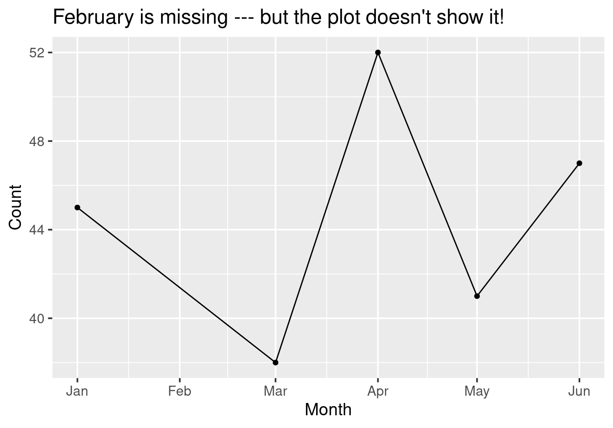
Figure 8.11: Line plots hide implicit missing data.
Notice how the line connects January directly to March. A casual observer would have no idea that February is missing from the data.
The solution is to make the missingness explicit by ensuring every time
point has a row, with NA values where data is missing. Once missing months have rows with NA counts, geom_line() will break
at those points, making the gaps visible:
# Data with explicit NA for February
monthly_data_explicit <- data.frame(
date = as.Date(c("2024-01-01", "2024-02-01", "2024-03-01",
"2024-04-01", "2024-05-01", "2024-06-01")),
count = c(45, NA, 38, 52, 41, 47)
)
ggplot(monthly_data_explicit, aes(x = date, y = count)) +
geom_line() +
geom_point() +
scale_x_date(date_breaks = "1 month", date_labels = "%b") +
labs(x = "Month", y = "Count",
title = "Now the missing February is visible")## Warning: Removed 1 row containing missing values or values outside the
## scale range (`geom_point()`).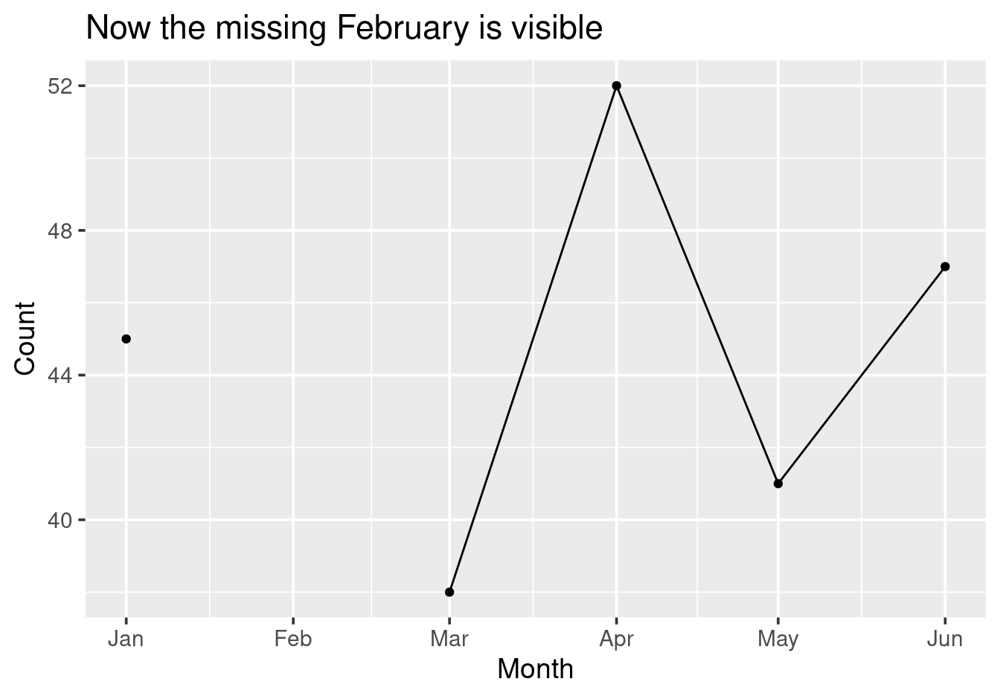
Figure 8.12: With explicit NA values, the gap becomes visible.
The tidyr package
provides functions like complete() that can fill in missing combinations of
values. The actual implementation using tidyr::complete() is beyond the scope of this
module, but it’s worth being aware of this issue when working with aggregated
data that might have implicit gaps.
8.5 Summary: temporal data
- Creating date or time objects using
lubridatepackage:- Use
make_date(year, month, day)to create aDateobject from separate integer columns - Use
make_datetime(year, month, day, hour)to create aPOSIXcttime object when hour (or finer) resolution is needed
- Use
- Plotting time series:
geom_line()connects points by \(x\)-value; robust to unsorted datageom_path()connects points by row order; powerful for showing how two variables evolve together over time- Both produce identical results when data is sorted by the \(x\)-variable
- Date axes:
- Use
scale_x_date()to customise time axes - Control breaks with
date_breaks(e.g.,"10 years","6 months") - Format labels with
date_labelsusing strftime codes (%Y,%b,%d) - Zoom with
coord_cartesian()to preserve all data for fitted lines
- Use